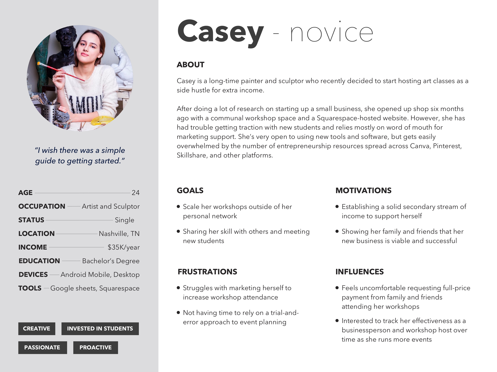
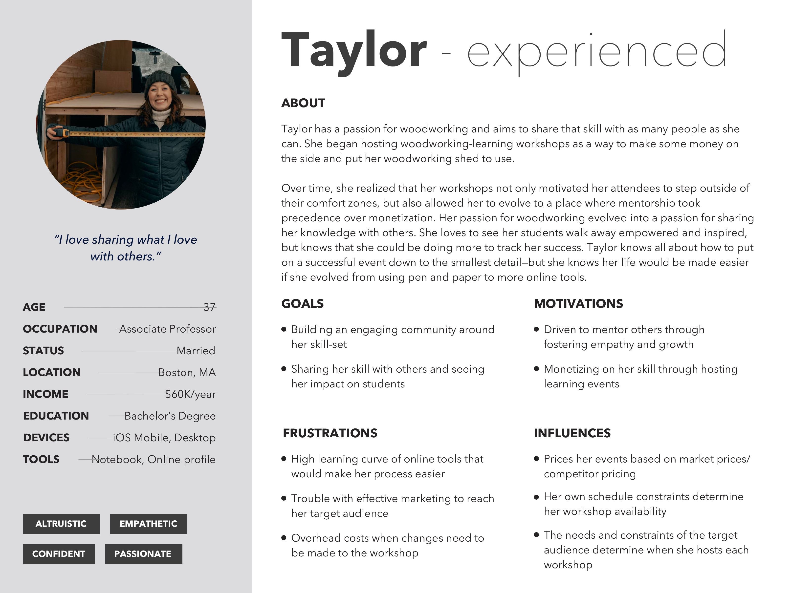

When running a workshop, teachers have to wear multiple hats--businessperson, instructor, marketer, event planner--each of which adds complexity and stress to their schedules. Our team examined how these skill-sharers might utilize a digital product to improve their hosting experience and designed a simple marketing tool to save them time and effort.
Five UX Designers, four weeks
UX Research and Design
Research artifacts (competitive analysis, user personas, journey map, empathy map), site map, annotated wireframes, prototype
We first needed to identify a market gap for this product, and then match that opportunity space with user needs. Initial assumptions told us that the most challenging part of hosting an in-person workshop might be the logistics: booking venues, coordinating with vendors, and managing attendee RSVPs. With this in mind, we conducted a competitive analysis of seven key competitors and asked two questions of each platform:
How easy is it to manage vendor bookings through this platform?
How much user support does this platform offer?
These seven competitors were either in the workshop domain directly, like Airbnb Experiences or Skillshare, or a complementary domain like wedding-planning or corporate venue booking. We found that one direct competitor scored well on both metrics, but as it was an online-only platform, we saw a market opportunity for a platform that could service those hosting in-person workshops.
Next, we spoke with workshop hosts to learn their needs, frustrations, and concerns with the hosting experience. We spoke to 13 users and gathered over 200 quotes and takeaways from those conversations.
To sort through these efficiently, we prioritized the notes detailing the user challenges and uncovered three surprising insights that informed our subsequent work.
From these three learnings, we heard two problems: managing logistics and conducting marketing were both a pain, filled with uncertainty and hassle. While these two learnings didn’t directly fit into the vendor-management space identified in our competitive analysis, our user interviews showed that hosts were handling logistics and marketing by ad hoc means such as pen and paper, email, and word documents rather than on a centralized platform. Therefore, we shaped our problem statement to articulate how intimidation and a lack of guidance were getting in the way of workshop hosts:
Passionate skill-sharers are experts in their craft, but feel intimidated when it comes to the aspects of event planning in which they lack experience. Hosts need a digital platform that provides access to tailored resources to reduce the knowledge gap they face when it comes to hosting and planning an event, so they can focus on sharing their skill with others.
We used a survey to identify what digital platform(s) would best service the needs of workshop hosts, and discovered high desktop usage (96%) when planning a workshop and high mobile usage (78%) when hosting. Therefore, a responsive site would best fit our users.
At this point, we had our platform and our problem identified, but we wanted to more clearly articulate who we were designing for. Our plethora of user research takeaways showed us two groups of users: novice hosts and experienced hosts.
 The novice host feels intimidated by the workshop-hosting experience and struggles to get the word out about her services beyond her immediate social circles. The experienced host knows new tools could make her process easier, but she’s slow to adopt them because her existing methods have been sufficient for so long.
Given Taylor’s resistance to use new tools and Casey’s openness to guiding resources, we decided that any MVP we created would have a greater impact on folks like Casey.
We began to ideate on potential solutions for new hosts via a Charrettes workshop. We explored concepts related to profiles, generators, newsfeeds, messaging, and virtual journeys.
Some of my favorite ideas:
However, as we began to evaluate the potential success of these concepts, we realized our mistake: we couldn’t validate a solution tailored to new hosts because we hadn’t spoken to enough of them!
If we had more time, we would conduct additional user research to gather more data from new hosts. Unfortunately, our timeline required that we move forward. As a result, we upheld the integrity of our existing data and pivoted to focus on creating an experience for seasoned hosts like Taylor.
We wanted to ensure that our final product could work around the resistant-adopter characteristic of experienced hosts while also serving as a valuable tool for all workshop hosts, regardless of their discipline. If possible, we also wanted this product to be something that new hosts like Casey could still use. These goals led us to craft a set of design principles that directed our ideation and solutioning process:
Our research showed us three key challenges facing experienced hosts like Taylor:
We conducted a Mind-Mapping exercise to branch off of these challenge areas and ended up with seven potential concepts that fit into two categories: two centered on marketing/promotional materials and five that focused on organization/task management.
After a prioritization exercise to rank ideas based on value to user, technical feasibility and adherence to the problem statement, we applied the earlier lesson from our persona pivot and moved forward with the marketing/promotional materials space, as our data showed that to be the true problem to be solved. Sure, organization was a hassle for users like Taylor (as we saw in our first research insight), but moving from her “good enough” system to a more efficient one was not a problem she was looking to solve!
Our two final marketing concepts worked well together because one helped hosts access simple, tailored marketing resources, and the other broke down the work into simple, auto-scheduled tasks that would allow hosts to focus their efforts on leading great workshops.
The auto-scheduling of marketing tasks presented a technical feasibility issue: how would this feature work across hosts who taught everything from woodworking to creative writing? Each host’s discipline required a unique timeline, and with no feasible way to cater to that in the product, we would end up breaking our design principle of Embracing Uniqueness. We found a workaround by grouping the tasks depending on if they should be completed before or after the workshop took place.
Two members of our team laid out a site map while I worked with the remaining team members to determine design, color and type conventions for a mid-fidelity design system.
We created a 30-screen mid-fidelity prototype which we called MarketMe, where hosts can view and complete a predetermined set of marketing tasks using templates provided by the service both before and after each workshop.
At the conclusion of the project, my team conducted usability testing that left us with three immediate considerations for MarketMe:
Some longer-term considerations that we would like to explore include built-in performance tracking for each marketing task and additional testing of the platform with new, inexperienced hosts.
There were a few usability tweaks and language clarifications that I made after the conclusion of the project while bringing the prototype into high fidelity:
There are three key changes that could have strengthened this design process.
I had a blast working with this team. To learn more about this project, please contact me.
Toggle dark/light mode